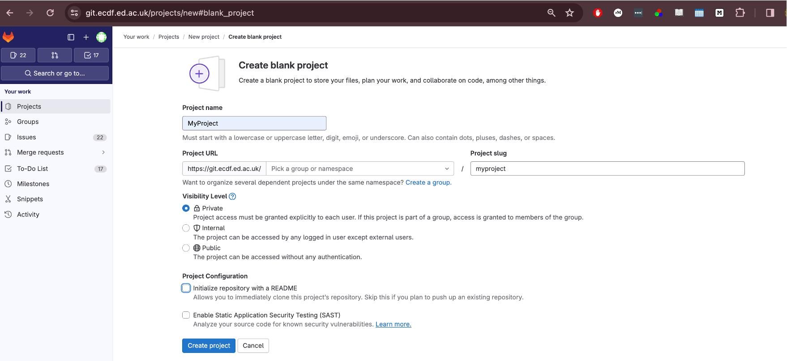
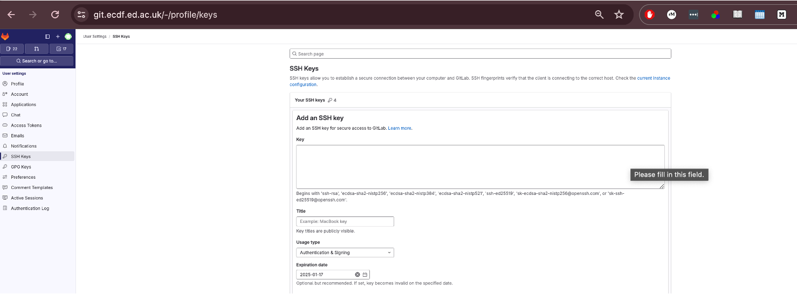

Working with Remote Repositories
Last updated on 2025-09-23 | Edit this page
Overview
Questions
- What is a remote in Git?
- How do I connect my local repository to one hosted on GitLab?
- How do I share my work (push) and incorporate others’ work (pull)?
- What should I do if a push is rejected because my branch is behind?
Objectives
- Define the term remote and list at least two common hosting services.
- Create a new remote connection with
git remote addand publish code withgit push -u origin main. - Retrieve updates with
git pulland explain the difference betweengit pullandgit fetch. - Resolve a simple non‑fast‑forward push rejection by pulling before pushing.
Introduction
A Git remote is a shorthand name for a version of your project hosted elsewhere, typically on a server like GitLab or GitHub. Remotes allow you to share your history and collaborate with others.
University of Edinburgh GitLab Repository
The University of Edinburgh provides a Git Repository hosting service using GitLab more information here
Log into GitLab, https://git.ecdf.ed.ac.uk, using your University of Edinburgh credentials.
Create New Project
-
Select New project

-
Select Create blank project

Add a Project Name MyProject
Un-tick Project Configuration->Initialize with A README
-
Click Create Project

6.This will create an Empty Repository, with details on how to link your existing git repository.
GitLab security
To enable password less access to your remote, you can add your public SSH Key from Eddie to the remote repository.
Generating a new SSH key
You can generate a new SSH key on your local machine. After you generate the key, you can add the public key to your account on GitLab to enable authentication for Git operations over SSH.
The University guide can be found here
Example below
BASH
[username@login02(eddie) ~]$ ssh-keygen -o -t ed25519
Generating public/private ed25519 key pair.
Enter file in which to save the key (/home/username/.ssh/id_ed25519):
Enter passphrase (empty for no passphrase):
Enter same passphrase again:
Your identification has been saved in /home/username/.ssh/id_ed25519.
Your public key has been saved in /home/username/.ssh/id_ed25519.pub.
The key fingerprint is:
SHA256:3t/tZzvbviR5Xs1YYYQeaGtI2n02W(and some more characters)hxxt (email address of the user)
The key's randomart image is:
+--[ED25519 256]--+
| oo.. . o... |
| o. o o ...o.+. |
| .+ + o+ +o+ .o |
| E o o. o +.B. .|
| S . = o .|
| . . . .+.|
| . . o.o+|
| . .=o=|
| . .O@|
+----[SHA256]-----+This will generate two files: the private key file (in this example
/home/username/.ssh/id_ed25519) and the public key file
(/home/username/.ssh/id_ed25519.pub) - it is vitally
important that you never share your private key
You can now add the contents of the public key file
id_ed25519.pub to the GitLab.
Go to https://git.ecdf.ed.ac.uk/-/user_settings/ssh_keys then click add new key

Git Remote on Eddie
Here we will link our existing repository on Eddie with the remote on
GitLab, using the git remote command.
To add out remote we use git remote add using the
information on the blank GitLab Repository page.
We can now use the git remote -v command to see it has
been linked.
Origin
The name “origin” for a git remote is not inherently special to Git’s internal mechanics, but it is a widely accepted convention and has a few notable points:
Default Name: When you clone a repository from a remote source using
git clone
Widely Recognized: Because of this default behavior, many developers expect “origin” to refer to the primary or original repository from which the project was cloned. This shared understanding can help with clarity when collaborating.
Can be Renamed or Removed: There’s nothing binding about the name “origin.” You can rename it or even have multiple remotes with different names to track different repositories or branches.
In essence, “origin” is a convention, and while it’s not mandatory to use, adhering to such conventions can make collaborative work smoother and more intuitive.
When you clone a repository you automatically get
one remote called origin. If you start with a local repo
(git init) you can add one later:
Syncing Repository
Now we have created an empty repository on the GitLab Server we can
send the local changes to the remote using git push. The
command git push tells Git, “Thanks for tracking these file
changes. Now I want to upload these changes into the main project
file.”
When you push your changes, you are essentially updating the remote repository with commits that have been made in your local repository
To do this, use the command
In your case, you can type git push origin main where
“origin” refers to the “remote repository” and “main” refers to the
branch you want to upload.
If you go back to the repository on GitLab and refresh the page you will the repository has been synced with the local version.

1. Syncing Changes
Make a change to the Readme.md file
Add this text, or something else, to the bottom of the
Readme.md file
## Data
The [data](https://figshare.com/articles/dataset/Data_Carpentry_Genomics_beta_2_0/7726454?file=14632895) is made available under an [Creative Commons license](https://creativecommons.org/licenses/by/3.0/).Now we will, add, commit to our local repository and push changes to our remote repository.
3. Pulling changes
Suppose a collaborator adds commits to our remote repository. Now we
need to get these changes locally. We can use the command
git pull to keep your local repository up to date with the
remote repository.
If there is no divergence, Git performs a fast‑forward merge. Otherwise you may need to resolve conflicts before completing the merge.
4. Handling a rejected push
You may see:
! [rejected] main -> main (non-fast-forward)This means your local branch is behind the remote. Fix it by pulling, resolving any conflicts, then pushing again:
BASH
$ git pull --rebase # preferred: reapply your work on top of remote
# ...resolve conflicts if prompted...
$ git pushChallenge 1: Check your remote
- Run
git remote -v.
- The output lists fetch and push URLs for origin.
Challenge 2: Upstream tracking
After cloning, what command shows which remote branch your local main is tracking?
git branch -vv lists local branches with their upstream
counterparts.
Challenge 3: Predict the outcome
You run git fetch origin followed by
git log --oneline main..origin/main. What will appear and
why?
The log shows commits that exist in origin/main but not in your local main; the two‑dot syntax lists commits reachable from the second reference and not the first.
Challenge 4: Clone vs init
List one advantage and one disadvantage of git clone
compared to creating a repo with git init and then adding a
remote.
Advantage: git clone copies
all history and configures the remote automatically,
saving time.
Disadvantage: You cannot easily choose which files or
branches to include during the initial copy (though --depth
and --branch options help).
Summary diagram

- A remote is a named reference to a repository hosted elsewhere.
-
git clone URLcopies a remote repository and sets up origin. - Publish an existing repo with
git remote addfollowed bygit push -u origin <branch>. -
git pullequalsgit fetch+git merge; use--rebaseto avoid unnecessary merges. - A push may be rejected if your branch is behind; pull (or fetch & merge) then push again.